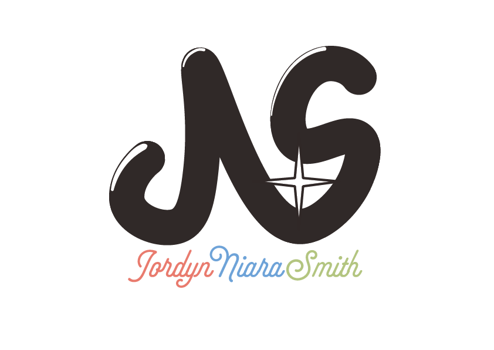
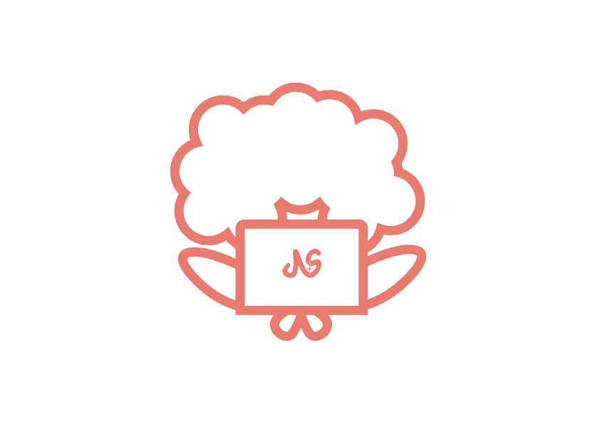
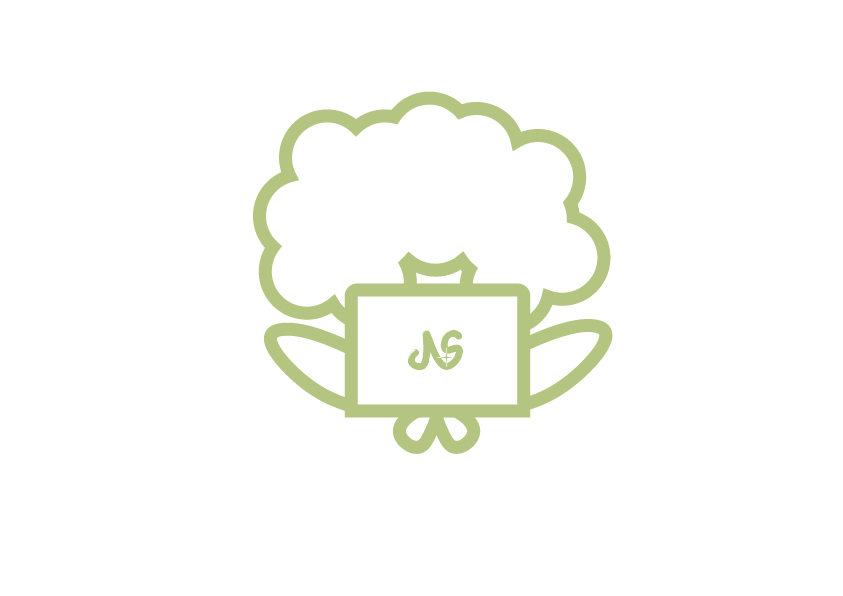

Wordmark & Favicon

Original & Reverse Color
Primary logo used in dark and light settings where appropriate.

Black and White & Reverse
High contrast logo used in dark and light settings where appropriate


Reverse Gradient
A baroque logo used when logo stands alone such as on a loading page or splash screen. Only available in reverse style.
Favicon Gradient
Used in browser tabs. Intended to standout against light and dark browser theme settings.

Mascot

Strawberry
Sky
